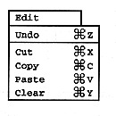

Table 2.3 Edit menu
Edit menu | Description |
Undo | Undoes the previous edit to the collision frame. If you do |
Cut | Deletes the selected collision frame and saves it to the paste buffer |
Copy | Saves the selected collision frame to the paste buffer. |
Paste | Outputs the contents of the paste buffer saved with “Cut” and “Copy”. |
Clear |
|